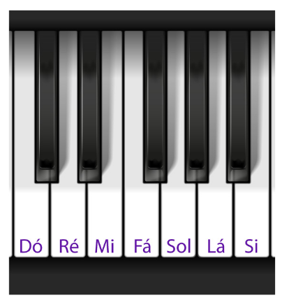
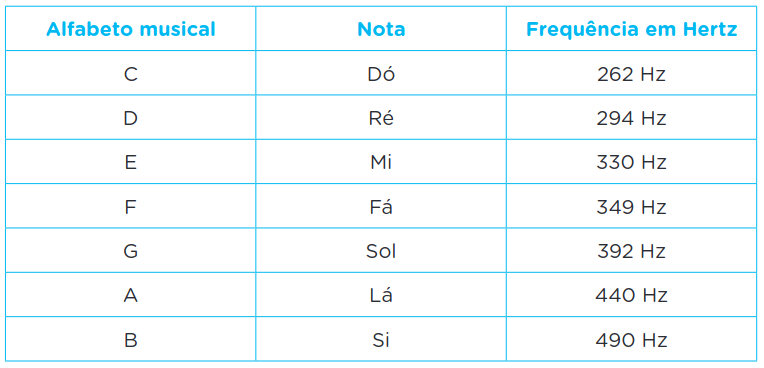
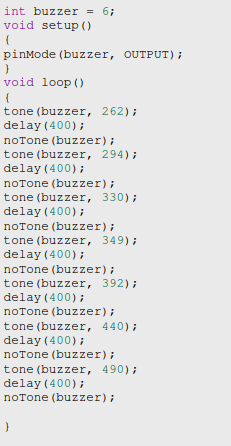

Os buzzers são dispositivos eletroacústicos que convertem sinais elétricos em ondas sonoras audíveis.
Eles são amplamente utilizados para emitir alertas, notificações ou sinais sonoros em uma variedade
de dispositivos eletrônicos e sistemas. Buzzers Ativos: Incorporam um circuito eletrônico interno que gera o som desejado quando uma corrente elétrica
é aplicada. Eles podem produzir uma variedade de sons diferentes e geralmente têm um volume mais alto do que
os buzzers passivos. Buzzers Passivos: Não possuem circuitos internos e dependem da frequência e amplitude do sinal elétrico
aplicado para produzir som. Eles são mais simples em termos de design e tendem a ser mais baratos, mas podem ter
um volume mais baixo em comparação com os buzzers ativos.
Para as conexões basta colocar o GND com o sinal de - no buzzer e uma porta de comunicação, no caso vamos usar a
saida 8 no sinal de + no buzzer
Notas

Notas com suas Frequências

Programação
